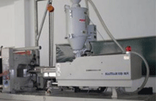

常见问题/Help more>>
行业资讯/News more>>

- PET塑料知识简述 [2015-05-01]
- 塑胶受力制品用原料选用原则 [2015-05-01]
- 修理塑料注塑机的基本方法介绍 [2015-05-01]
- 从成本和需求的角度分析塑料未来走…… [2015-05-01]
- 减少塑料加工中的收缩知识 [2015-05-01]
- 注塑机温升过高 五大危害全面分析 [2015-05-01]
友情链接/Link
Copyright © 2015-2018 上海百纳塑业有限公司 版权所有 Power by BaiNa
地址：上海市杨浦区控江路1865号
电话：400-191-0099